Level 3¶
The prototypes for the following routines can be found at include/elemental/blas-like.hpp, while the implementations are in include/elemental/blas-like/level3/.
Gemm¶
General matrix-matrix multiplication: updates
 ,
where 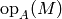 and 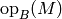 can each be chosen from
,
where 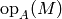 and 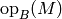 can each be chosen from
 , 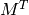, and 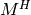.
, 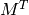, and 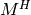.
- void Gemm(Orientation orientationOfA, Orientation orientationOfB, T alpha, const Matrix<T>& A, const Matrix<T>& B, T beta, Matrix<T>& C)¶
The serial implementation (templated over the datatype).
- void Gemm(Orientation orientationOfA, Orientation orientationOfB, T alpha, const DistMatrix<T>& A, const DistMatrix<T>& B, T beta, DistMatrix<T>& C)¶
The distributed implementation (templated over the datatype).
Hemm¶
Hermitian matrix-matrix multiplication: updates
 , or
, or
 , depending upon whether side is set to
LEFT or RIGHT, respectively. In both of these types of updates,
, depending upon whether side is set to
LEFT or RIGHT, respectively. In both of these types of updates,
 is implicitly Hermitian and only the triangle specified by uplo is
accessed.
is implicitly Hermitian and only the triangle specified by uplo is
accessed.
- void Hemm(LeftOrRight side, UpperOrLower uplo, T alpha, const Matrix<T>& A, const Matrix<T>& B, T beta, Matrix<T>& C)¶
The serial implementation (templated over the datatype).
- void Hemm(LeftOrRight side, UpperOrLower uplo, T alpha, const DistMatrix<T>& A, const DistMatrix<T>& B, T beta, DistMatrix<T>& C)¶
The distributed implementation (templated over the datatype).
Her2k¶
Hermitian rank-2K update: updates 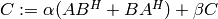, or 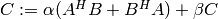, depending upon whether orientation is set to NORMAL or ADJOINT, respectively. Only the triangle of specified by the uplo parameter is modified.
- void Her2k(UpperOrLower uplo, Orientation orientation, T alpha, const Matrix<T>& A, const Matrix<T>& B, T beta, Matrix<T>& C)¶
The serial implementation (templated over the datatype).
- void Her2k(UpperOrLower uplo, Orientation orientation, T alpha, const DistMatrix<T>& A, const DistMatrix<T>& B, T beta, DistMatrix<T>& C)¶
The distributed implementation (templated over the datatype).
Please see SetLocalTrr2kBlocksize<T>( int blocksize ) and int LocalTrr2kBlocksize<T>() in the Tuning parameters section for information on tuning the distributed Her2k.
Herk¶
Hermitian rank-K update: updates
 , or
, or
 , depending upon whether orientation is
set to NORMAL or ADJOINT, respectively. Only the triangle of
specified by the uplo parameter is modified.
, depending upon whether orientation is
set to NORMAL or ADJOINT, respectively. Only the triangle of
specified by the uplo parameter is modified.
- void Herk(UpperOrLower uplo, Orientation orientation, T alpha, const Matrix<T>& A, T beta, Matrix<T>& C)¶
The serial implementation (templated over the datatype).
- void Herk(UpperOrLower uplo, Orientation orientation, T alpha, const DistMatrix<T>& A, T beta, DistMatrix<T>& C)¶
The distributed implementation (templated over the datatype).
Please see SetLocalTrrkBlocksize<T>( int blocksize ) and int LocalTrrkBlocksize<T>() in the Tuning parameters section for information on tuning the distributed Herk.
Symm¶
Symmetric matrix-matrix multiplication: updates
, or
, depending upon whether side is set to
LEFT or RIGHT, respectively. In both of these types of updates,
is implicitly symmetric and only the triangle specified by uplo
is accessed.
- void Symm(LeftOrRight side, UpperOrLower uplo, T alpha, const Matrix<T>& A, const Matrix<T>& B, T beta, Matrix<T>& C)¶
The serial implementation (templated over the datatype).
- void Symm(LeftOrRight side, UpperOrLower uplo, T alpha, const DistMatrix<T>& A, const DistMatrix<T>& B, T beta, DistMatrix<T>& C)¶
The distributed implementation (templated over the datatype).
Syr2k¶
Symmetric rank-2K update: updates 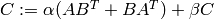, or 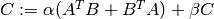, depending upon whether orientation is set to NORMAL or TRANSPOSE, respectively. Only the triangle of specified by the uplo parameter is modified.
- void Syr2k(UpperOrLower uplo, Orientation orientation, T alpha, const Matrix<T>& A, const Matrix<T>& B, T beta, Matrix<T>& C)¶
The serial implementation (templated over the datatype).
- void Syr2k(UpperOrLower uplo, Orientation orientation, T alpha, const DistMatrix<T>& A, const DistMatrix<T>& B, T beta, DistMatrix<T>& C)¶
The distributed implementation (templated over the datatype).
Please see SetLocalTrr2kBlocksize<T>( int blocksize ) and int LocalTrr2kBlocksize<T>() in the Tuning parameters section for information on tuning the distributed Syr2k.
Syrk¶
Symmetric rank-K update: updates
 , or
, or
 , depending upon whether orientation is
set to NORMAL or TRANSPOSE, respectively. Only the triangle of
specified by the uplo parameter is modified.
, depending upon whether orientation is
set to NORMAL or TRANSPOSE, respectively. Only the triangle of
specified by the uplo parameter is modified.
- void Syrk(UpperOrLower uplo, Orientation orientation, T alpha, const Matrix<T>& A, T beta, Matrix<T>& C)¶
The serial implementation (templated over the datatype).
- void Syrk(UpperOrLower uplo, Orientation orientation, T alpha, const DistMatrix<T>& A, T beta, DistMatrix<T>& C)¶
The distributed implementation (templated over the datatype).
Please see SetLocalTrrkBlocksize<T>( int blocksize ) and int LocalTrrkBlocksize<T>() in the Tuning parameters section for information on tuning the distributed Syrk.
Trmm¶
Triangular matrix-matrix multiplication: performs
 , or
, or
 , depending upon whether side was chosen
to be LEFT or RIGHT, respectively. Whether is treated as
lower or upper triangular is determined by uplo, and 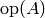
can be any of , 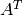, and 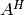 (and diag determines
whether is treated as unit-diagonal or not).
, depending upon whether side was chosen
to be LEFT or RIGHT, respectively. Whether is treated as
lower or upper triangular is determined by uplo, and 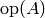
can be any of , 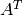, and 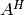 (and diag determines
whether is treated as unit-diagonal or not).
- void Trmm(LeftOrRight side, UpperOrLower uplo, Orientation orientation, UnitOrNonUnit diag, T alpha, const Matrix<T>& A, Matrix<T>& B)¶
The serial implementation (templated over the datatype).
- void Trmm(LeftOrRight side, UpperOrLower uplo, Orientation orientation, UnitOrNonUnit diag, T alpha, const DistMatrix<T>& A, DistMatrix<T>& B)¶
The distributed implementation (templated over the datatype).
Trr2k¶
Triangular rank-2k update: performs 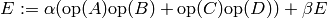, where only the triangle of E specified by uplo is modified, and 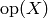 is determined by orientationOfX, for each 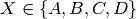.
Note
There is no corresponding BLAS routine, but it is a natural generalization of “symmetric” and “Hermitian” updates.
- void Trr2k(UpperOrLower uplo, Orientation orientationOfA, Orientation orientationOfB, Orientation orientationOfC, Orientation orientationOfD, T alpha, const Matrix<T>& A, const Matrix<T>& B, const Matrix<T>& C, const Matrix<T>& D, T beta, Matrix<T>& E)¶
The serial implementation (templated over the datatype).
- void Trr2k(UpperOrLower uplo, Orientation orientationOfA, Orientation orientationOfB, Orientation orientationOfC, Orientation orientationOfD, T alpha, const DistMatrix<T>& A, const DistMatrix<T>& B, const DistMatrix<T>& C, const DistMatrix<T>& D, T beta, DistMatrix<T>& E)¶
The distributed implementation (templated over the datatype).
Trrk¶
Triangular rank-k update: performs 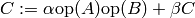, where only the triangle of C specified by uplo is modified, and and 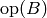 are determined by orientationOfA and orientationOfB, respectively.
Note
There is no corresponding BLAS routine, but this type of update is frequently encountered, even in serial. For instance, the symmetric rank-k update performed during an LDL factorization is symmetric but one of the two update matrices is scaled by D.
- void Trrk(UpperOrLower uplo, Orientation orientationOfA, Orientation orientationOfB, T alpha, const Matrix<T>& A, const Matrix<T>& B, T beta, Matrix<T>& C)¶
The serial implementation (templated over the datatype).
- void Trrk(UpperOrLower uplo, Orientation orientationOfA, Orientation orientationOfB, T alpha, const DistMatrix<T>& A, const DistMatrix<T>& B, T beta, DistMatrix<T>& C)¶
The distributed implementation (templated over the datatype).
Trtrmm¶
Note
This routine loosely corresponds with the LAPACK routines ?lauum.
Symmetric/Hermitian triangular matrix-matrix multiply: performs 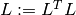, 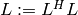, 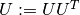, or 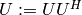, depending upon the choice of the orientation and uplo parameters.
- void Trtrmm(Orientation orientation, UpperOrLower uplo, Matrix<T>& A)¶
- void Trtrmm(Orientation orientation, UpperOrLower uplo, DistMatrix<T>& A)¶
Trdtrmm¶
Note
This is a modification of Trtrmm for LDL factorizations.
Symmetric/Hermitian triangular matrix-matrix multiply (with diagonal scaling):
performs 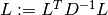, 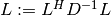,
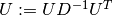, or  ,
depending upon the choice of the orientation and uplo parameters.
Note that
,
depending upon the choice of the orientation and uplo parameters.
Note that  and
and  are unit-diagonal and their diagonal is
overwritten with
are unit-diagonal and their diagonal is
overwritten with  .
.
- void Trdtrmm(Orientation orientation, UpperOrLower uplo, Matrix<F>& A)¶
- void Trdtrmm(Orientation orientation, UpperOrLower uplo, DistMatrix<F>& A)¶
Trsm¶
Triangular solve with multiple right-hand sides: performs
 , or
, or
 , depending upon whether side was
chosen to be LEFT or RIGHT, respectively. Whether is treated
as lower or upper triangular is determined by uplo, and
can be any of , , and (and diag determines
whether is treated as unit-diagonal or not).
, depending upon whether side was
chosen to be LEFT or RIGHT, respectively. Whether is treated
as lower or upper triangular is determined by uplo, and
can be any of , , and (and diag determines
whether is treated as unit-diagonal or not).
- void Trsm(LeftOrRight side, UpperOrLower uplo, Orientation orientation, UnitOrNonUnit diag, T alpha, const Matrix<T>& A, Matrix<T>& B)¶
The serial implementation (templated over the datatype).
- void Trsm(LeftOrRight side, UpperOrLower uplo, Orientation orientation, UnitOrNonUnit diag, T alpha, const DistMatrix<T>& A, DistMatrix<T>& B)¶
The distributed implementation (templated over the datatype).